БЛОК ЦИЛИНДРОВ > ПРОВЕРКА |
| 1. CLEAN CYLINDER BLOCK SUB-ASSEMBLY |
Using a gasket scraper, remove all the gasket material from the top surface of the cylinder block.
Using a soft brush and solvent, thoroughly clean the cylinder block.
| 2. INSPECT CYLINDER BLOCK SUB-ASSEMBLY |
Inspect for flatness.
| 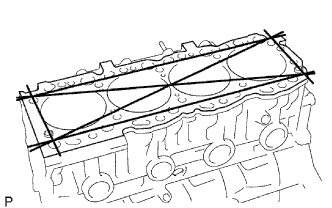 |
Using a precision straightedge and feeler gauge, measure the surfaces that contacts the cylinder head and main bearing cap for warpage.
Visually check the cylinder for vertical scratches. If deep scratches are present, rebore all 4 cylinders. If necessary, replace the cylinder block.
| 3. INSPECT CYLINDER BORE |
| 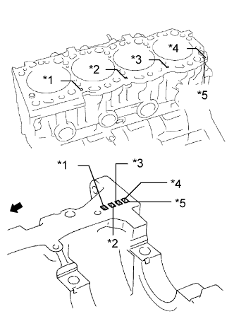 |
Inspect the cylinder bore diameter.
| *1 | No. 1 |
| *2 | No. 2 |
| *3 | No. 3 |
| *4 | No. 4 |
| *5 | Mark 1, 2 or 3 |
 | Front |
| 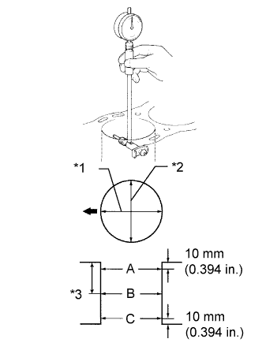 |
Using a cylinder gauge, measure the cylinder bore diameter at positions A, B and C in the thrust and axial directions.
| Item | Specified Condition |
| Mark 1 | 99.500 to 99.510 mm (3.9173 to 3.9177 in.) |
| Mark 2 | 99.510 to 99.520 mm (3.9177 to 3.9181 in.) |
| Mark 3 | 99.520 to 99.530 mm (3.9181 to 3.9185 in.) |
| Item | Specified Condition |
| STD | 99.73 mm (3.93 in.) |
| O/S 0.50 | 100.23 mm (3.95 in.) |
| *1 | Thrust Direction |
| *2 | Axial Direction |
| *3 | Center |
| Front |
| 4. CLEAN PISTON SUB-ASSEMBLY WITH PIN |
Using a gasket scraper, remove the carbon from the piston top.
Using a groove cleaning tool or broken ring, clean the piston ring grooves.
Using solvent and a brush, thoroughly clean the piston.
| 5. INSPECT PISTON SUB-ASSEMBLY |
| 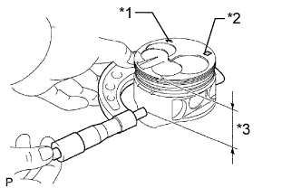 |
Using a micrometer, measure the piston diameter at right angles to the piston center line where the distance from the piston head is as specified.
| Item | Specified Condition |
| Mark 1 | 99.450 to 99.460 mm (3.9153 to 3.9157 in.) |
| Mark 2 | 99.460 to 99.470 mm (3.9157 to 3.9161 in.) |
| Mark 3 | 99.470 to 99.480 mm (3.9161 to 3.9165 in.) |
| O/S 0.50 | 99.950 to 99.980 mm (3.935 to 3.936 in.) |
| *1 | Front Mark |
| *2 | Size Mark |
| *3 | Distance |
Measure the cylinder bore diameter in the thrust directions.
| 6. INSPECT PISTON OIL CLEARANCE |
| 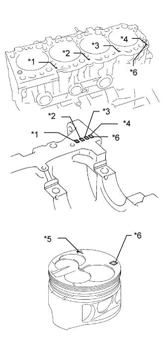 |
Subtract the piston diameter measurement from the cylinder bore diameter measurement.
| *1 | No. 1 |
| *2 | No. 2 |
| *3 | No. 3 |
| *4 | No. 4 |
| *5 | Front Mark |
| *6 | Mark 1, 2 or 3 |
| 7. INSPECT PISTON PIN OIL CLEARANCE |
Inspect the piston pin fit.
| 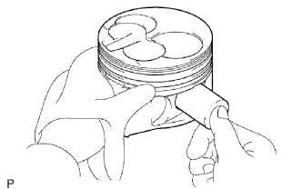 |
Heat the piston to approximately. 60°C (140°F), and push the piston pin into the piston pin hole with your thumb.
If the pin can be installed at a lower temperature, replace the piston and pin as a set.
| 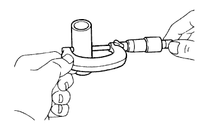 |
Using a micrometer, measure the piston pin diameter.
| Item | Specified Condition |
| Mark A | 29.000 to 29.004 mm (1.1417 to 1.1419 in.) |
| Mark B | 29.004 to 29.008 mm (1.1419 to 1.1420 in.) |
| Mark C | 29.008 to 29.012 mm (1.1420 to 1.1422 in.) |
Inspect the piston pin oil clearance.
Using a caliper gauge, measure the inside diameter of the connecting rod bush.
| Item | Specified Condition |
| Mark A | 29.008 to 29.012 mm (1.1420 to 1.1422 in.) |
| Mark B | 29.012 to 29.016 mm (1.1422 to 1.1424 in.) |
| Mark C | 29.016 to 29.020 mm (1.1424 to 1.1425 in.) |
Subtract the piston pin diameter measurement from the bush inside diameter measurement.
| 8. INSPECT RING GROOVE CLEARANCE |
Using a feeler gauge, measure the clearance between a new piston ring and the wall of the ring groove.
| Item | Specified Condition |
| No. 1 compression ring | 0.057 to 0.101 mm (0.00224 to 0.00398 in.) |
| No. 2 compression ring | 0.060 to 0.100 mm (0.00236 to 0.00394 in.) |
| Oil ring | 0.030 to 0.070 mm (0.00118 to 0.00276 in.) |
| 9. INSPECT PISTON RING END GAP |
Insert the compression ring into the cylinder bore.
Using a piston, push the compression ring a little beyond the bottom of the ring travel, 140 mm (5.15 in.) from the top of the cylinder block.
Using a feeler gauge, measure the end gap.
| Item | Specified Condition |
| No. 1 compression ring | 0.350 to 0.470 mm (0.0138 to 0.0185 in.) |
| No. 2 compression ring | 0.470 to 0.600 mm (0.0185 to 0.0236 in.) |
| Oil ring | 0.200 to 0.400 mm (0.00787 to 0.0157 in.) |
| Item | Specified Condition |
| No. 1 compression ring | 1.29 mm (0.0508 in.) |
| No. 2 compression ring | 1.42 mm (0.0559 in.) |
| Oil ring | 1.22 mm (0.0480 in.) |
| 10. INSPECT CONNECTING ROD SUB-ASSEMBLY |
Using a rod aligner and feeler gauge, check the connecting rod alignment.
| 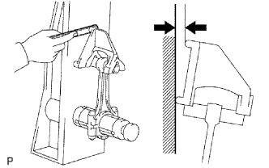 |
Check if the connecting rod is bent.
| 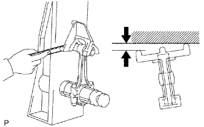 |
Check if the connecting rod is twisted.
| 11. INSPECT CONNECTING ROD BOLT |
| 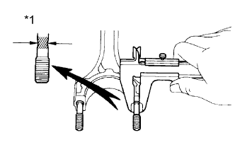 |
Using a vernier caliper, measure the diameter of the tension portion of the connecting rod bolt.
| *1 | Compressed Bolt |
| 12. INSPECT CRANKSHAFT |
Inspect for circle runout.
Place the crankshaft on V-blocks.
Using a dial indicator, measure the circle runout at the center journal.
Inspect the main journals and crank pins.
Using a micrometer, measure the diameter of each main journal and crank pin.
| 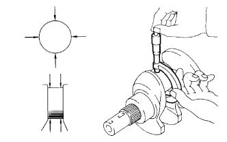 |
Check each main journal and crank pin for taper and out of round as shown in the illustration.
If necessary, grind and hone the main journals and/or crank pins.
Grind and hone the main journals and/or crank pins to the finished undersized diameter.
Install new main journal and/or crankshaft pin undersized bearing.
| 13. REMOVE CRANKSHAFT AND INSPECT OIL CLEARANCE |
Remove the crankshaft (See page Нажмите здесь).
Clean each crankshaft journal and bearing.
Check each crankshaft journal and bearing for pitting and scratches.
If the journal or bearing is damaged, replace the bearings. If necessary, grind or replace the crankshaft.
Place the crankshaft on the cylinder block.
| 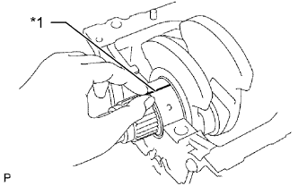 |
Lay a strip of Plastigage across each journal.
| *1 | Plastigage |
Install the 5 crankshaft bearing caps (See page Нажмите здесь).
Remove the 10 bolts and 5 crankshaft bearing caps.
| 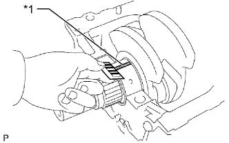 |
Measure the Plastigage at its widest point.
| Item | Specified Condition |
| STD | 0.034 to 0.065 mm (0.00134 to 0.00256 in.) |
| U/S 0.25, U/S 0.50 | 0.033 to 0.079 mm (0.00130 to 0.00311 in.) |
| *1 | Plastigage |
| 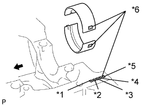 |
If using a standard bearing, replace it with one having the same number marked on the connecting rod cap. There are 3 sizes of standard bearing, marked 1, 2 and 3 accordingly.
| Item | Specified Condition |
| Mark 1 | 1.979 to 1.983 mm (0.0779 to 0.0781 in.) |
| Mark 2 | 1.983 to 1.987 mm (0.0781 to 0.0782 in.) |
| Mark 3 | 1.987 to 1.991 mm (0.0782 to 0.0784 in.) |
| *1 | No. 1 |
| *2 | No. 2 |
| *3 | No. 3 |
| *4 | No. 4 |
| *5 | No. 5 |
| *6 | Mark 1, 2 or 3 |
| Front |
Completely remove the Plastigage.
Perform the inspection above for each crank journal.
Lift out the crankshaft.
| 14. INSPECT NO. 1 OIL NOZZLE |
Inspect the check valve.
| 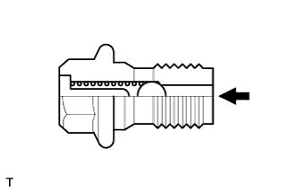 |
Push the valve with a wooden stick to check if it is stuck.
If stuck, replace the check valve.
Inspect the oil nozzle
| 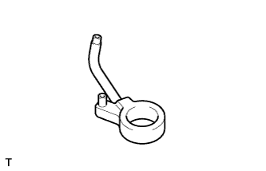 |
Check the oil nozzle for damage or clogging.
If necessary, replace the oil nozzle.